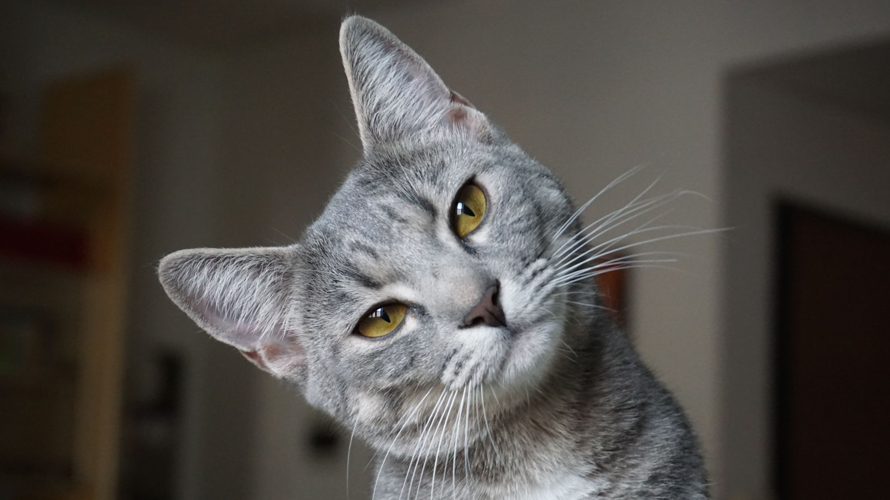

Jerry is a charming and friendly dog with a heart of gold, and he is looking for a loving home to call his own. He is a medium-sized mixed breed with soft, fluffy fur and soulful brown eyes that will melt your heart. If you are looking for a loyal and loving companion who will bring endless joy into your life, Jerry may be the perfect pet for you. Adopting Jerry means giving him a second chance at a happy life, and you will be rewarded with the unconditional love and companionship that only a dog can provide. So don't hesitate to bring this wonderful pup home today!

Tom is a handsome and affectionate cat who is looking for his forever home. He is a medium-sized domestic shorthair with sleek black and white fur and striking green eyes that will capture your heart. If you are looking for a loyal and loving companion who will provide you with endless joy and entertainment, Tom may be the perfect pet for you. Adopting Tom means giving him a second chance at a happy life, and you will be rewarded with the unconditional love and companionship that only a cat can provide mhn mmmm . So why not bring this wonderful feline into your life today?